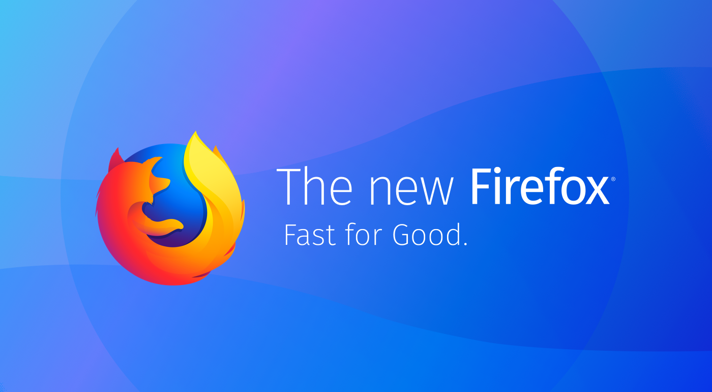

TL;DR 作为Firefox曾经的老用户，很早就使用了Firefox。后来因为Google Chrome浏览器的崛起，切换到了Chrome平台(没错，Chrome不仅仅是一个浏览器，还是一个平台)。但最近Firefox 57发布，做了诸多改进，速度比Chrome更快，作为Firefox的曾经的拥趸，我想切换成Firefox + Chrome的模式，但是很快我发现这个切换成本比想象中的大，因为Chrome浏览器上面的书签、浏览记录和网站密码很难同步到Firefox，反之亦然。于是我开始了浏览器中立计划: 如何做到自己独立于浏览器，不受被特定浏览器的特性捆绑。
Firefox 57

发布
2017年11月14日，Firefox 57正式对外发布，官方的介绍(地址在这里)是这样说的：
It’s fast. Really fast. Firefox Quantum is over twice as fast as Firefox from 6 months ago, built on a completely overhauled core engine with brand new technology stolen from our advanced research group, and graced with a beautiful new look designed to get out of the way and let you do what you do best: surf a ton of pages, open a zillion tabs, all guilt free because Firefox Quantum uses less memory than the competition. computer will thank you. 🙂
纵览Firefox 57的发布说明，可以总结成：Firefox 57使用了全新技术的CSS渲染引擎，使用了现代CPU的多核和低功耗的特性，速度更快。更改了UI，让界面更好看。同时更改了扩展的机制，废弃了除 WebExtensions 以外的所有扩展机制。
使用评价
总的来说，Firefox感官上确实非常快。据官方自己的说法：开非常多的tab也不会卡，这个在Chrome里面很明显，使用过Chrome的小伙伴都知道，Chrome的tab开太多后，浏览器和系统都非常卡。但是Firefox的扩展机制缩小后，很多插件都不能用了，这个比较麻烦。
浏览器中立计划
这里我想切换成Firefox + Chrome的模式，但我发现切换成本很大：Chrome的书签、浏览记录和网站密码很难同步到Firefox，反之亦然。于是我开始了浏览器中立计划: 让这些信息脱离浏览器的绑定。
书签同步
本来以为Firefox下会有谷歌书签的插件的，后来发现完全没有，我想这应该是因为Google没有开放API的问题吧（Google没有以前那么开放了，sad）。经过调研以后，发现有个Xmarks的服务可以提供跨浏览器的第三方书签服务。Xmarks现在已经是Lastpass旗下的产品了。唯一要注意的是Chrome浏览器版的Xmarks在自动同步上面和Chrome自带的自动同步有些冲突，可能会导致账号不停的退出然后要求登陆，解决方案就是按照Xmarks的提示：先关掉Xmarks的自动同步，再登陆账号。
密码同步
浏览器给我带来的最大的便利就是可以记住各种各样网站的密码，现在的网站那么多，密码管理起来很麻烦。幸运的是有不少不错的密码类管理服务：Lastpass, 1Password, or Keeper （这个名单是Github在保存Two-factor recovery codes时推荐的列表）。最终我选择了比较常见的Lastpass，当然也是因为Xmarks也是Lastpass旗下的产品，本来以为可以使用一个账号登陆呢，结果不行，很失望。使用这类密码类管理服务的好处就是它不仅能够保存网站密码，还能保存SSH key等纯文本的密钥，还能用来保存二进制的文件。
浏览记录同步
暂时无解，只能使用各自的账号体系同步：Chrome使用谷歌账号，Firefox使用Firefox的账号体系。幸运的是浏览记录同步不是那么重要的功能，当然也许以后有大神或者公司可以开发类似的服务，那么整个浏览器中立计划也就完备了。